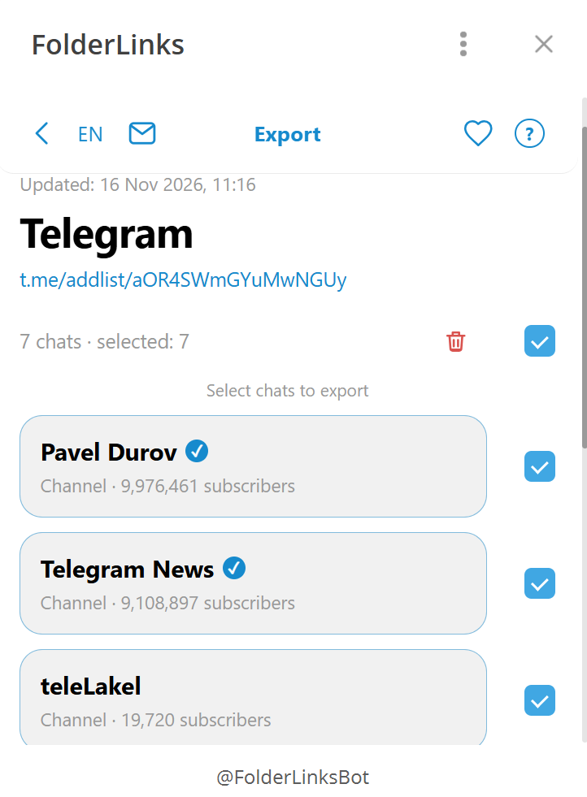
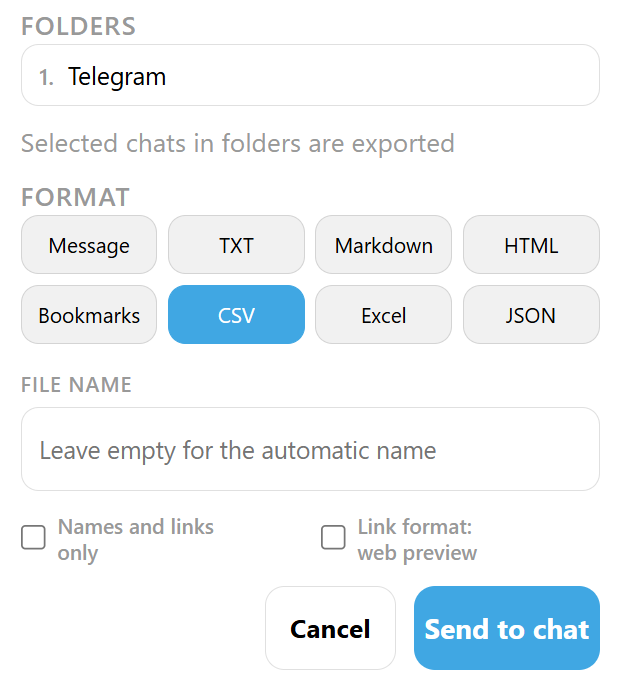

Export channel and group links from your Telegram account
FolderLinks instantly and freely turns any Telegram folder link into a detailed list of channels and groups.
Get results directly as a Telegram message or export them to Excel, HTML, JSON, and other formats.
How it works
Copy the folder link
In Telegram, select an existing folder or create a new one with the channels and groups you need. Create an invite link like https://t.me/addlist/... You can also use a link to any public folder shared with you.
Send the link to FolderLinks
The bot replies with the folder name and links to its chats. Open the Mini App to review the list and pick items to export.
Select your export format
Receive your result as a chat message, spreadsheet, text document, or browser bookmarks. Multiple folders can be merged into a single file.
Access your saved results anytime
Your folder remains saved in FolderLinks: reopen and re-export it whenever you need. The original link is no longer required.

Use cases
Back up your channels and groups
Keep a clean backup of your subscription links. Explore public Telegram folders without having to join them in your own account.
Prepare curated collections and catalogs
Get ready-to-use hyperlinks for public posts, recommendations, catalogs, and documentation. Just add your commentary – the links are already organized.
Collect sources for automation
Export clean channel lists for your scraping scripts, automation tools, and AI agents. For channels, select web preview links formatted as https://t.me/s/username.
What you can export
- Channel and group names.
- Standard links (
https://t.me/username). - Subscriber and member counts.
- Official Telegram labels: Verified, Scam, Fake.
- Web preview links for channels (
https://t.me/s/username). - Multiple folders combined in a single file.
Supported formats

Security
FolderLinks does not request access to your Telegram account and requires no administrator rights.
It does not join channels or groups, subscribe your account to them, or read message history. It also does not monitor future updates through submitted links.
Frequently asked questions
Can I export all my channels and groups?
Can I save message text and photos?
What happens to private channels and groups?
When creating a link, you can select private channels and groups where you have permission to invite other users. However, since they do not have public usernames, FolderLinks cannot generate public links for them.
Please note: If you add your own private basic group when creating a folder link, Telegram may automatically convert it into a supergroup without a separate warning. This conversion does not make the group public.
Can I export links from a public folder shared by someone else?
Do channel lists and subscriber counts update automatically?
Can I re-export a folder after its link has been deleted?
Can I combine multiple folders into one file?
How do standard links differ from web preview links?
https://t.me/username opens the channel inside the Telegram app. A link like https://t.me/s/username opens a browser-based preview of the channel that can be viewed without a Telegram account or app installed. This option is not supported for groups.